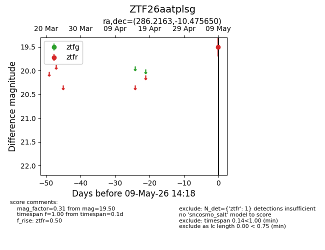
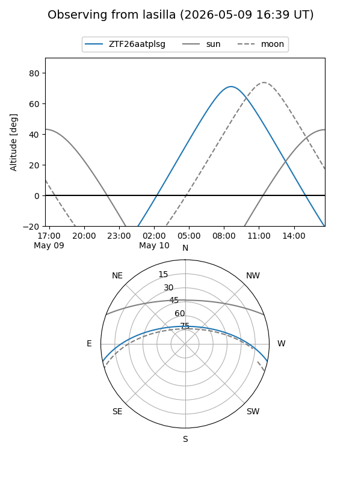
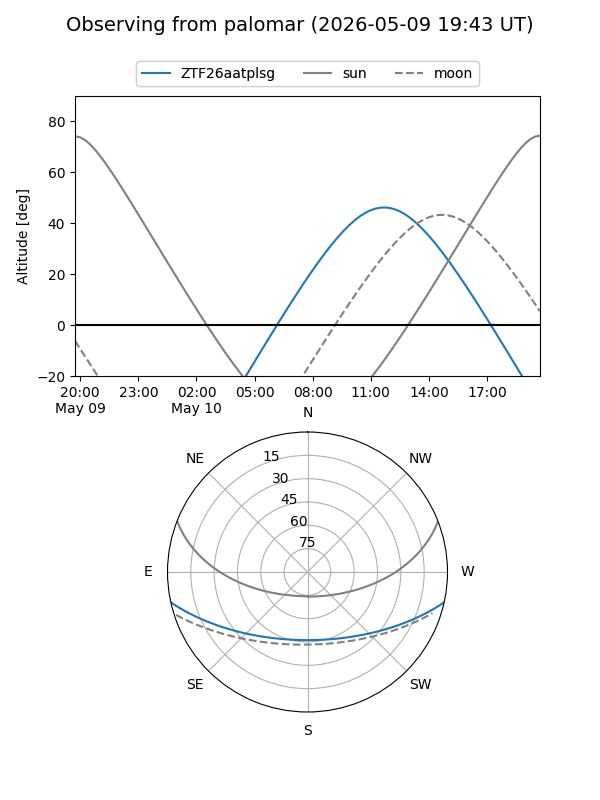

ZTF26aatplsg
Target ZTF26aatplsg at 2026-05-09 14:20
Aliases and brokers:
FINK: link
Lasair: link
ALeRCE: link
alt names
ZTF26aatplsg (ztf,fink_ztf)
Coordinates:
equatorial (ra, dec) = 286.2163,-10.47565
equatorial (HMS+DMS) = 19:04:51.91,-10:28:32.34
galactic (l, b) = (25.0693,-7.70943)
Flags:
Photometry:
last ztfr=19.50
1 ztfr detections
Lightcurve

Visibility


Additional plots